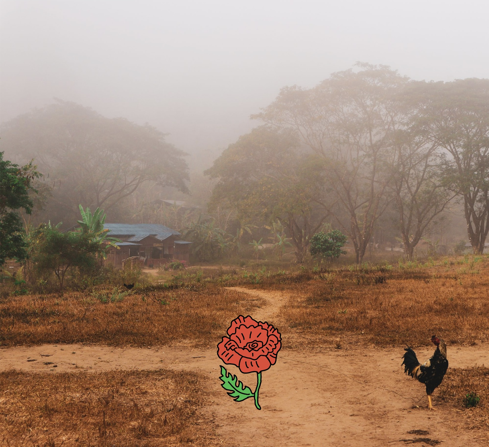
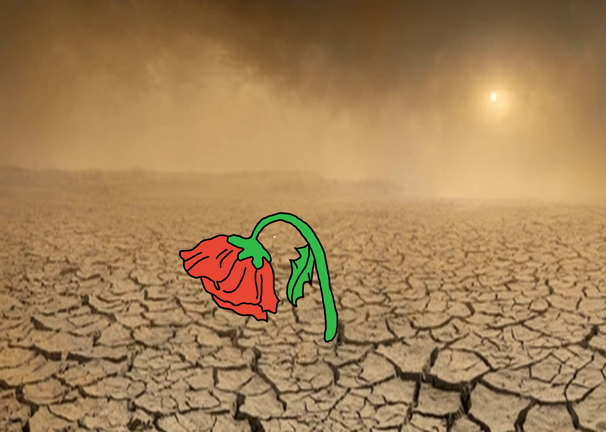
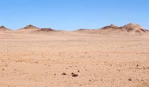
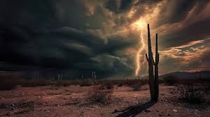
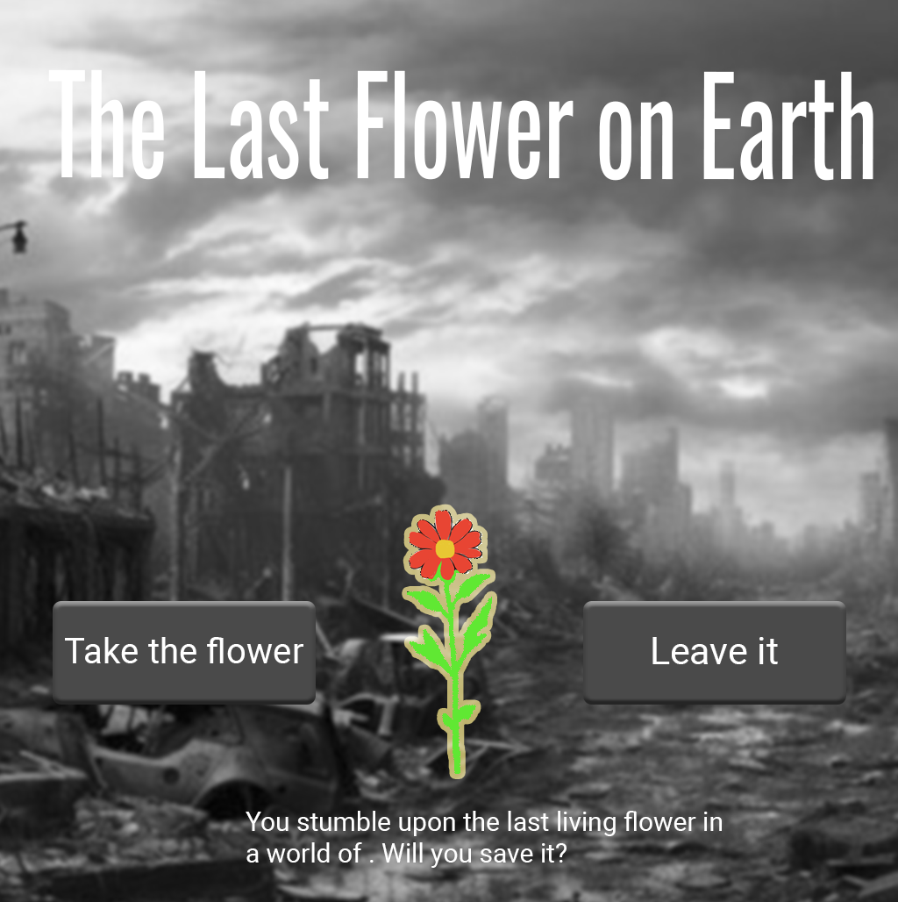

:: StoryTitle
The last flower on earth
:: StoryData
{
"ifid": "F73F7A08-BADB-4E0D-BEE7-8BA88AC1CE09",
"format": "Harlowe",
"format-version": "3.3.9",
"start": "start scene",
"zoom": 1
}
:: Flower Alive Scene {"position":"212.5,400","size":"100,100"}
\:: Flower Alive Scene
The Flower Blooms
The flower blooms brilliantly, a symbol of hope and survival.

[[Start Over|Start]]
:: Flower Dead Scene {"position":"350,400","size":"100,100"}
\:: Flower Dead Scene
The Flower Has Withered
The storm was too strong, and the flower did not survive.

[[Start Over|Start]]
:: Rest Scene {"position":"475,275","size":"100,100"}
\:: Rest Scene
You Find Shelter
The storm passes quietly as you rest.

[[Check on the Flower|Flower Alive Scene]]
[[Start Over|Start]]
:: Start {"position":"462.5,400","size":"100,100"}
\:: Start
The Last Flower on Earth
You find yourself in a barren, lifeless world. Hope seems lost...

[[Face the Storm|Storm Scene]] |
[[Find Shelter|Rest Scene]]
:: Storm Scene {"position":"337.5,275","size":"100,100"}
\:: Storm Scene
A Violent Storm Approaches
You must act quickly to protect the flower.

[[Protect the Flower|Flower Alive Scene]] |
[[Let the Storm Rage|Flower Dead Scene]]
[[Start Over|Start]]
:: start scene {"position":"400,150","size":"100,100"}
\:: Start
The Last Flower on Earth
You find yourself in a barren, lifeless world. Hope seems lost...

[[Face the Storm|Storm Scene]] |
[[Find Shelter|Rest Scene]]
:: StoryStylesheet [stylesheet]
/* General Styles */
body {
background-color: #2e2e2e; /* Muted dark gray background */
color: #e0d8b0; /* Soft earthy beige text */
font-family: 'Arial', sans-serif;
text-align: center;
line-height: 1.6;
margin: 0;
padding: 0;
}
tw-story {
padding: 20px;
}
h1 {
color: #ffc107; /* Warm gold for headings */
font-size: 36px;
margin-top: 10px;
}
p {
font-size: 18px;
margin: 10px 20px;
}
a {
color: #80b3ff; /* Light sky blue links */
font-weight: bold;
text-decoration: none;
background-color: #444;
padding: 5px 10px;
border-radius: 5px;
}
a:hover {
background-color: #ffc107; /* Highlighted gold on hover */
color: #2e2e2e; /* Inverted hover effect */
}
img {
border: 3px solid #555; /* Subtle border around images */
border-radius: 10px;
margin: 20px auto;
width: 70%; /* Set width of image */
max-width: 700px;
height: auto;
display: block; /* Center images */
}